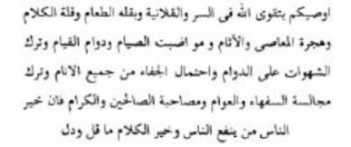
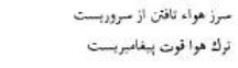
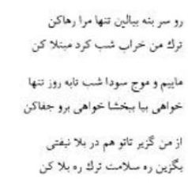

Nihayet yorgun bedeni son hastalığının pençesine düştü. Hararet Mevlânâ’yı bir türlü terk etmiyordu. Tabip Ekmeleddin, gece gündüz yanından ayrılmıyordu. Hastalığının ne olduğu bir türlü anlaşılamıyordu. Mübarek vücudu hararetten yanıyor gibi idi. Yanındaki su dolu kaba ellerini sokuyor, yüzüne, eline sürüyordu. Hasta yatağına düştüğü bu sıralarda, yedi gün, yedi gece hadden aşırı deprem oldu. Birçok evler ve bağların duvarları yıkıldı. Dünya birbirine girdi. Yedinci depremde halk korku ve dehşet içinde Mevlânâ’ya geldiler, ondan dua etmesini niyaz ettiler. Hazret-i Mevlânâ tebessüm ederek, “Korkmayın zavallı toprak acıkmış, yağlı bir lokma istiyor. Bunu vermek lâzımdır.” diye buyurdu ve yanında bulunanlara şöyle vasiyet etmeye başladı:

“Ben, size gizli ve aşikâr olarak Allah’tan korkmanızı vasiyet ederim. Az yemek yemenizi, az uyumanızı, az konuşmanızı, günâhlardan sakınmanızı, oruca, namaza devam etmenizi, daima şehvetten kaçınmanızı, bütün insanlardan başınıza gelecek eziyetlere ve cefalara sabır ve tahammül etmenizi, cahil insanlarla, zevklerine düşkün olan sefihlerle oturup kalkmaktan kaçınmanızı, kerem sahipleri ile, salih ve iyi kişilerle sohbet etmenizi, beraber bulunmanızı vasiyet ederim. Çünkü insanların en hayırlısı, insanlara faydası dokunandır. Sözün hayırlısı da az ve öz olanıdır.”

“Hevâ ve hevesten yüz çevirmek, şehvetten kaçınmak kahramanlıktır. Hevâ ve hevesi bırakmak da peygambere has bir kuvvettir.”
1273 senesi Aralık ayının on altıncı günü, Mevlânâ biraz iyileşmişti. Akşama kadar gelenlerle konuştu. Fakat her sözü, adeta vasiyet gibi idi. Akşam oldu; Konya gecenin karanlığına gömüldü. Mevlânâ’nın yanında gönül dostu Çelebi Hüsameddin, oğlu Sultan Veled ve hekimler vardı. Sultan Veled o günlerde üzüntüden, uykusuzluktan son derece zayıflamıştı. O gece de çok perişan bir hâlde idi. Mevlânâ sabaha karşı, oğlunun yaşlı gözlerine baktı ve hafif bir sesle, “Bahaeddin,” dedi, “ben iyiyim, sen git biraz yat.” Sultan Veled, tahammül edemedi, gözyaşlarını zor zaptederek kalktı. Odadan çıkarken Mevlânâ hazin bakışlarla arkasından baktı ve birkaç beytini aldığım son gazelini söyledi.

“Git başını yastığa koy, beni yalnız bırak, geceleri dolaşıp duran, yanmış yakılmış müptelâdan vazgeç.
Biz geceleri yapayalnız sabahlara kadar sevda dalgaları arasında çırpınır dururuz. İster isen gel bizi bağışla, ister isen hicranınla bize cefa et.
Sen, benden kaç ki sen de benim gibi dertlere düşmeyesin; sen dert yolunu terk et de kurtuluş yolunu seç.” (Divan-ı Kebîr, 2039)
Ertesi gün 17 Aralık 1273 Pazar günü güneş gurup ederken mânâ güneşi Mevlânâ da rûh âlemine gurup etti. Böylece Hazret-i Mevlânâ 44 yıl önce şereflendirdiği Konya’da şu fâni dünyaya gözlerini kapadı.